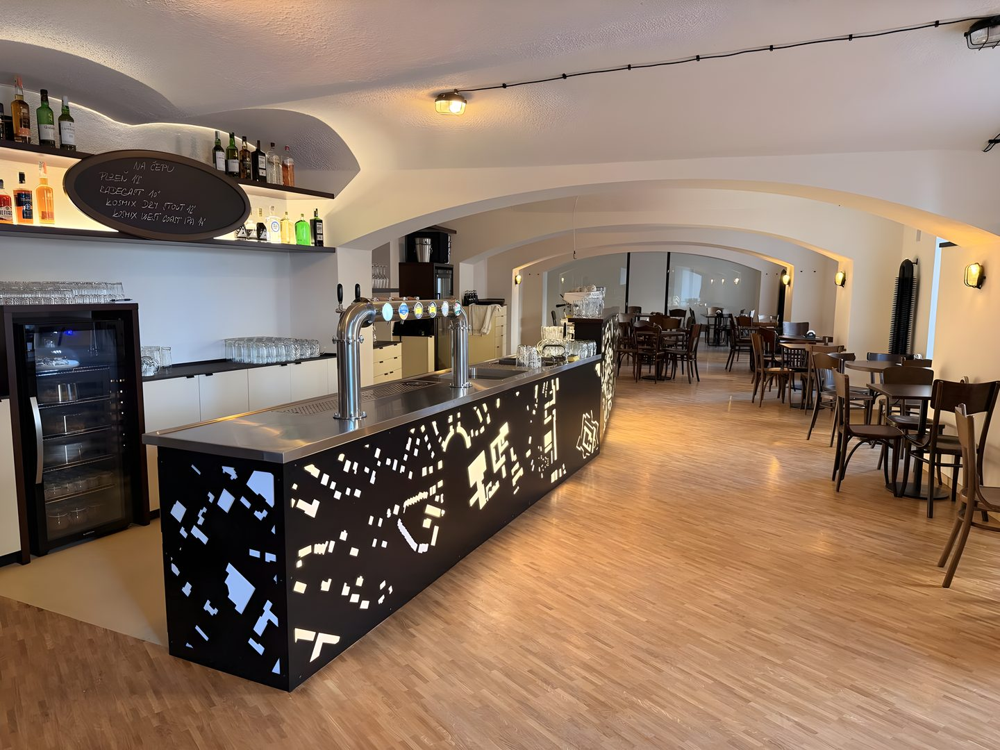
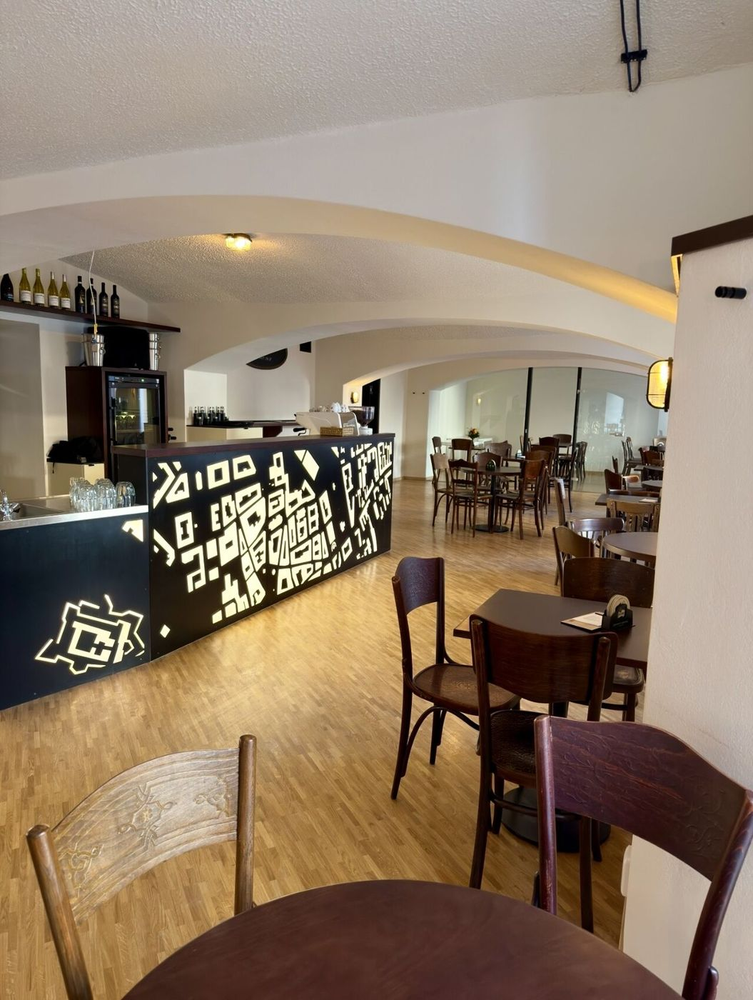
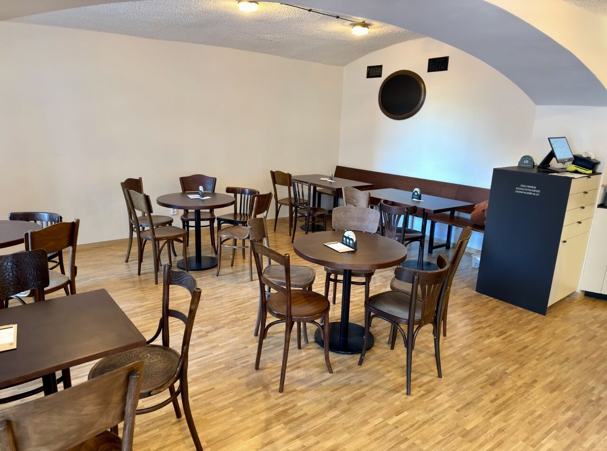
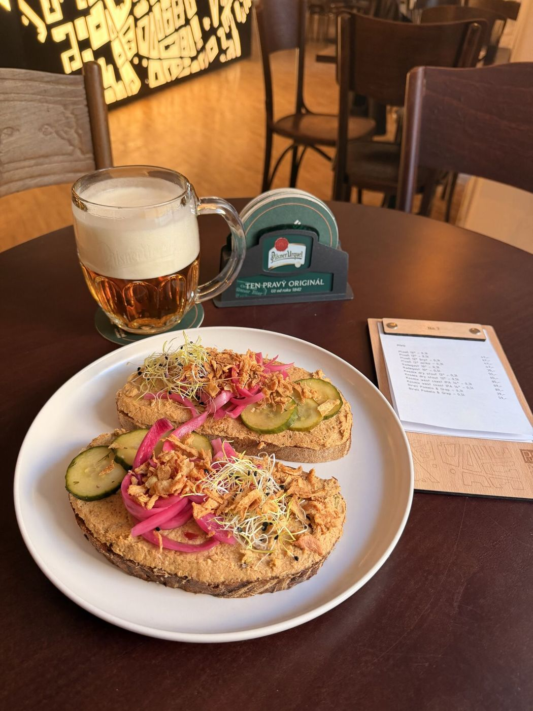
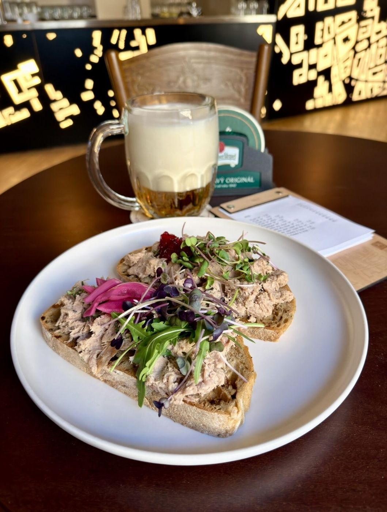
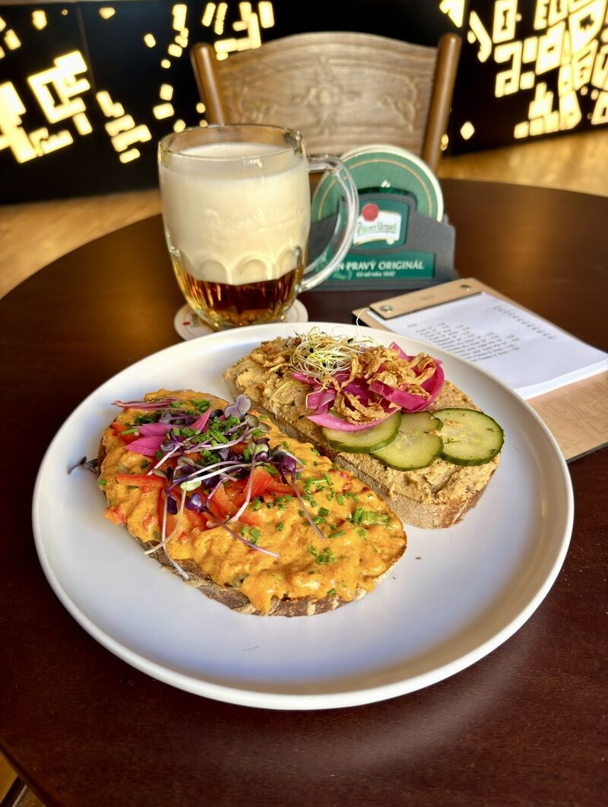
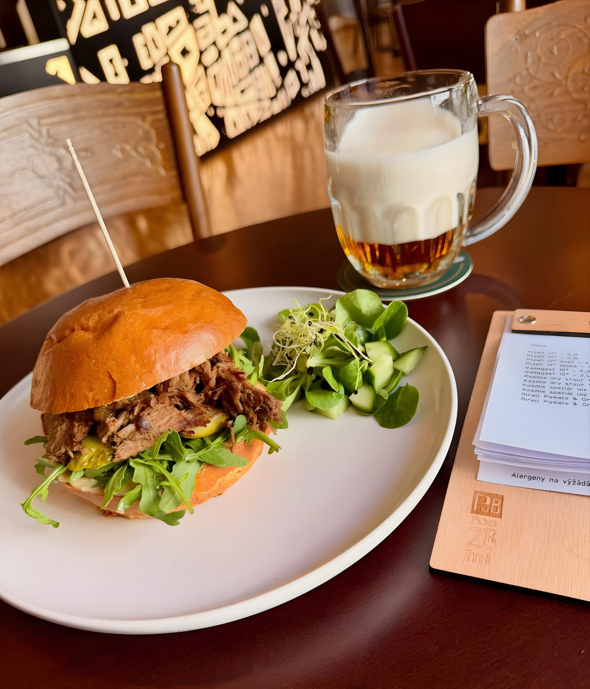
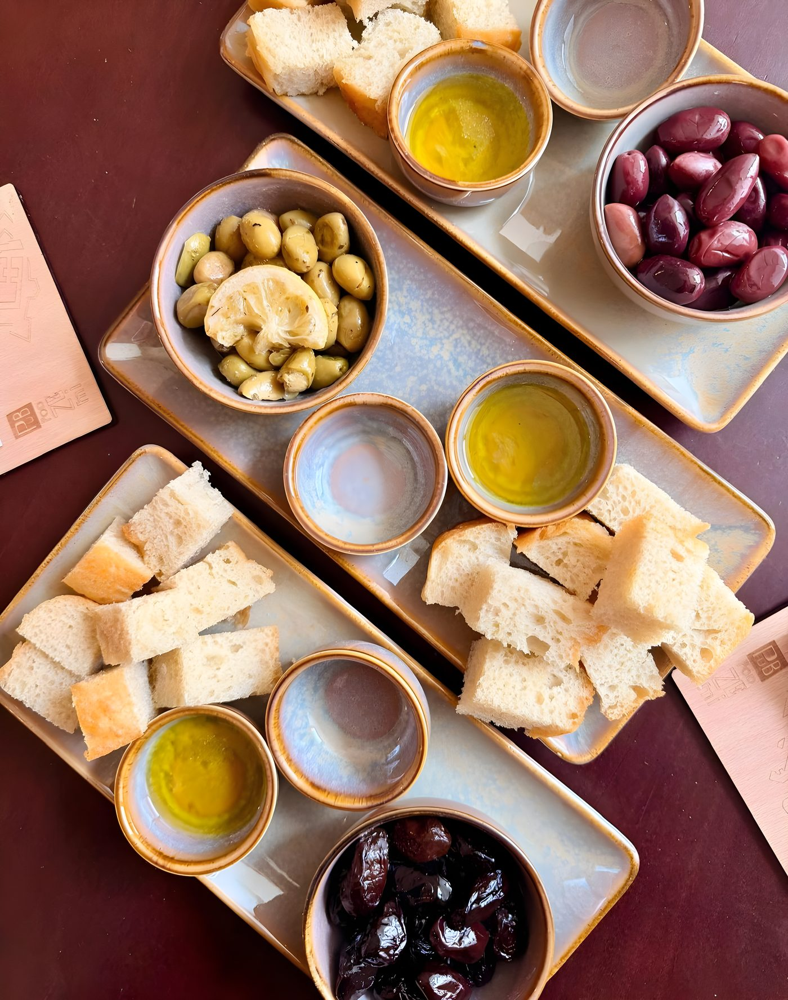
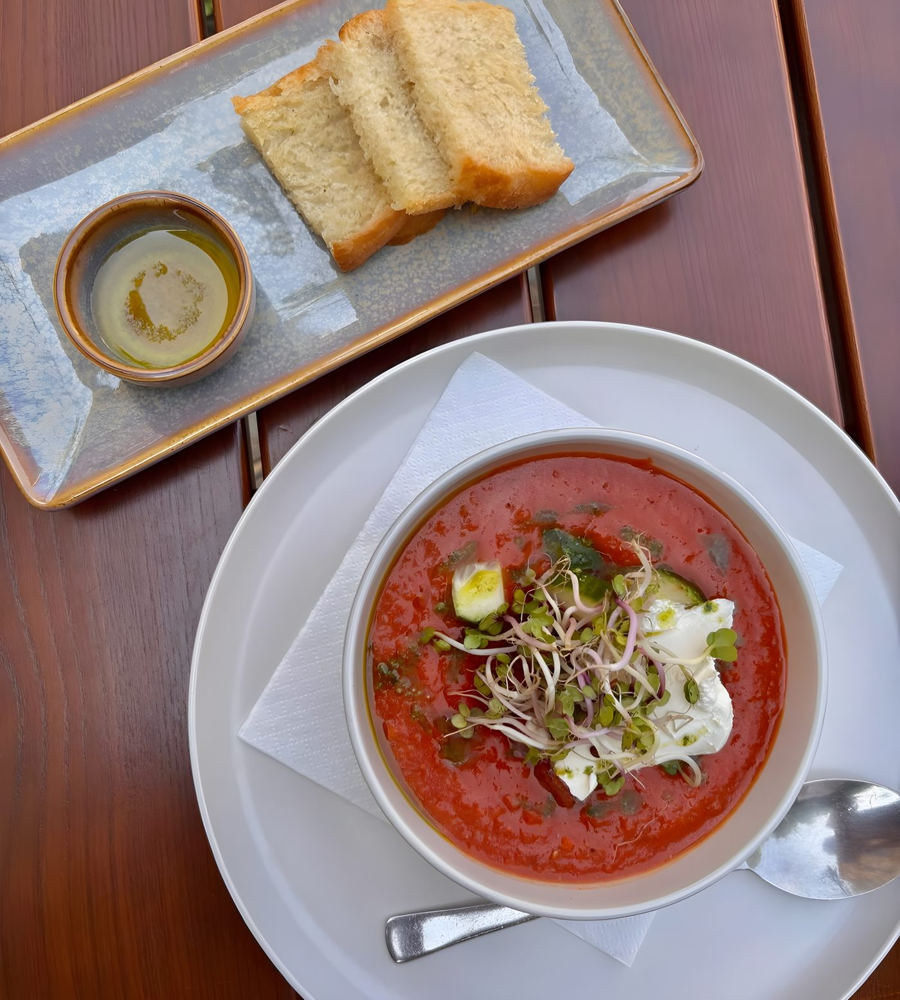

Skvěle načepované pivo, kvalitní vína a výborná kuchyně. V centru Brna, kousek pod Špilberkem.
Otevřeno denně od 15:00 do 01:00
Přijďte i vy do pivnice Pub Podzemi, která se nachází přímo v centru Brna pod hradem Špilberk.
Nenechte se zmást názvem, nejde o žádný sklep v podzemí. Naopak – vsadili jsme na vzdušný prostor s možností otevření výlohových oken do nově zrekonstruované ulice. V letních měsících tak určitě oceníte propojení interiéru s venkovním prostředím nebo třeba zahrádku přímo před podnikem.

Na čepu máme Plzeň a Radka doplněné o speciály z pivovaru Kosmix. Nechybí ani Prosecco a výběr kvalitních rozlévaných i lahvových vín. V letních horkých dnech ocení hosté i míchané drinky.
Autorem interiéru je stejně jako v případě našeho Cafe Podnebi architekt Tomáš Pavlovský. Nový podnik navazuje na dlouholetou tradici a přináší svěží gastronomický zážitek.







| Pondělí | 15:00 – 01:00 |
| Úterý | 15:00 – 01:00 |
| Středa | 15:00 – 01:00 |
| Čtvrtek | 15:00 – 01:00 |
| Pátek | 15:00 – 01:00 |
| Sobota | 15:00 – 01:00 |
| Neděle | 15:00 – 01:00 |
Pub Podzemi
Údolní 222/5
602 00 Brno-město